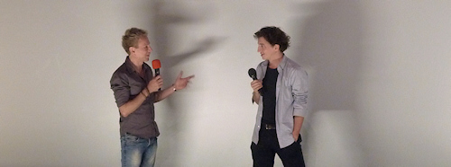

Beasts of the Southern Wild
USA (2012) Regie: Benh Zeitlin Darsteller: Quvenzhané Wallis (Hushpuppy), Dwight Henry (Wink) und andere Laiendarsteller aus Louisiana Offizielle Homepage
Hushpuppy, ein sechsjähriges Mädchen, lebt mit ihrem Vater in einer abgelegenen Siedlung im Mississippi-Delta, dem “Bathtub”. Die Bewohner des “Bathtub” haben sich bewusst entschieden, autark mit der Natur zu leben, anstatt in Städten ein bequemes Leben zu führen. Doch als ein Hurricane über das Delta zieht, wird die gesamte Siedlung überschwemmt, da ein großer Damm das Wasser daran hindert, sich in Richtung der inländischen Städte zu verteilen. Nur wenige Bewohner sind im “Bathtub” geblieben und verweigern die Hilfe der Regierung. Auch Hushpuppy und ihr Vater führen einen harten Kampf ums Überleben, denn in den überfluteten Gebieten gibt es keine Nahrungsquellen mehr und zudem ist sich Hushpuppy sicher, dass ein Rudel prähistorischer Auerochsen zu ihnen unterwegs ist…
Eine interessante Mischung präsentiert Regisseur Benh Zeitlin mit seinem ersten Langfilm dem Zuschauer. Da ist zum Einen die recht konventionelle Geschichte um ein kleines Mädchen, das mit einem knurrigen Vater auskommen muss und auf der Suche nach der Mutter ist, in einer schwierigen Situation jedoch über sich hinauswächst. Dieses Grundgerüst verpackt er in das unverbrauchte Setting des “Bathtub” und kombiniert es mit etwas Zeitgeschehen (Katrina) und der wilden Fantasie des Mädchens, die sich aus den widersprüchlichen Aussagen der Erwachsenen eine eigene Realität zusammenbastelt.
Dabei nimmt der Film konsequent ihre Perspektive ein, indem er die Kamera auf ihrer Augenhöhe platziert und aus dem Off ihre Gedanken mitteilt. So ist nicht immer klar, ob das abgebildete Geschehen wirklich so passiert oder nur der lebhaften Vorstellung von Hushpuppy entspringt, wie die Auerochsen, von denen die Lehrerin erzählt hat. Geschickt wird dabei jedwede Erklärung ausgelassen, so dass der Zuschauer erst nach und nach versteht, in welchem Rahmen sich die Handlung bewegt.
Sehr nervig fand ich die anstrengende Kamera. Um in dem unwegsamen Gelände möglichst wenig Material schleppen zu müssen, wurden fast alle Szenen mit kleinen 16mm-Handkameras und ohne Kunstlicht gedreht. Entsprechend wacklig und körnig sind die meist schlecht fokussierten Bilder, so dass es in den Augen wehtut. Irgendwie passt das zwar zum “Bathtub”, wo die Häuser und Boote aussehen, als kämen sie direkt aus dem postapokalyptischen Mad Max, und doch ist es keine Freude zuzuschauen. Besser macht es da der Soundtrack, den Regisseur Benh Zeitlin mitgestaltet hat und der gut die Energie von Hushpuppy transportiert, aber auch die ruhigen Momente des Films mitträgt.
Direkt nach der Vorführung beim FantasyFilmFest gab es noch ein sehr informatives Q&A mit dem Regisseur, bei dem er viel über den Entstehungsprozess erzählte. Fast alles - Drehbuch, Kamera, Darsteller, die Monster - wurde den örtlichen Gegebenheiten angepasst. Selbst die initiale Idee kam erst, als der Regisseur aufgrund eines Kurzfilms eine Filmförderung erhielt. Wo andere danach streben, so viel Kontrolle wie nur möglich über den eigenen Film zu haben, war Benh Zeitlin wichtig, einen Film zu machen, der zum Einen den Geist des Drehortes lebt - er selbst stammt aus Louisiana - und in welchem er sein eingespieltes Team aus seiner bisherigen Arbeit einsetzen kann.
So schön ich es finde, dass in der vom Profitdenken dominierten Filmwirtschaft solche Filme möglich sind, so wenig begeistert bin ich von dem finalen Ergebnis: Einem Film, der nur gemacht wurde, um einen Film zu machen, dem fehlt einfach das gewisse Etwas. In manchen Momenten hat mich Beasts of the Southern Wild wirklich in seinen Bann gezogen, doch er gab mir auch genügend Zeit, um hinter die interessante Fassade mit den Auerochsen und dem schweren Leben in der Wildnis des Mississippi-Deltas zu blicken. Und da blieb nur eine sehr konventionelle Geschichte übrig, der es etwas an Substanz für neunzig Minuten Film fehlt.

Zu guter Letzt muss ich mich noch über die Mitarbeiter des Cinemaxx beschweren. Diese haben an den Türen zum Kino 7 die Tickets eingesammelt, d.h. mir wurde das Ticket komplett abgenommen und nicht nur abgerissen. Da ich meine Tickets sammel’ wollte ich natürlich wissen, warum ich es nicht behalten kann, woraufhin mir sehr unfreundlich geantwortet wurde, dass dies nun mal so sei und ich wenn ich es möchte mein Ticket nach dem Film wieder abholen könne. Ein paar Sitznachbarn im Kino haben genau dieselbe Erfahrung gemacht und waren ebenso negativ überrascht wie ich. Unsere Vermutung war, dass über die Tickets eine weitere Kontrolle erfolgte, dass nur echte Ticketinhaber in die ausverkaufte Vorstellung gelangen.
Allerdings habe ich mein Ticket nach dem Film nicht zurückbekommen - ich wurde also erneut angelogen, weil der Ticketkontrolleur keine Diskussion führen wollte. Liebes Cinemaxx: Macht doch einfach keine solche Aktionen! Wenn ich 9,50€ für eine Kinovorstellung ausgebe, dann möchte ich auch das Ticket danach als Bestätigung behalten. Einlasskontrollen können auch anders durchgeführt werden!